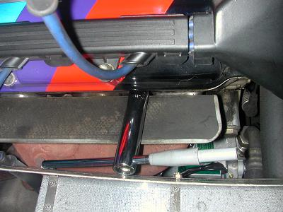
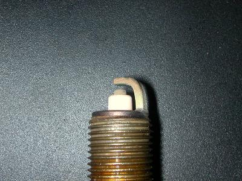
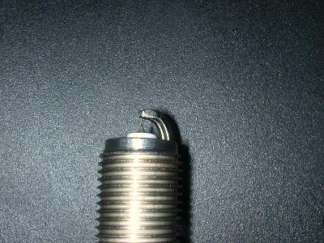

2006/3/28 点火プラグの交換
 M30のプラグの交換は、車載工具が一番使いやすい気がします。(特に5番、6番） |
||||||||||||||||||||||||||||||||
 2万キロ走ったプラグです。イイ感じに焼けている？ |
||||||||||||||||||||||||||||||||
 今回は、DENSOのイリジウムパワー（IW16）に交換です。 ってことで、5000キロほどで純正プラグ（W8LCR）に戻してしまいました。 |
||||||||||||||||||||||||||||||||
メーカ別プラグの熱値対照表
|